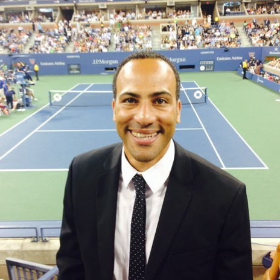

I am a Cybersecurity Professional dedicated to protecting critical data and infrastructure in an increasingly complex threat landscape. My background bridges the gap between traditional enterprise security and specialized environments, with hands-on experience across Infra & Tech Ops, SaaS, MDM & Cloud, and Sports Tech & AV. My objective is straightforward: to defend against emerging cyber threats and ensure the absolute confidentiality, integrity, and availability of organizational systems. If you're looking to collaborate, build resilient architectures, or discuss the future of digital defense, feel free to reach out via my contact section below.
